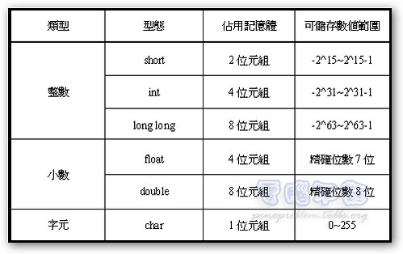

朱冶蕙老師的電腦教室
最小的C程式
#include <stdio.h> //引用標準化輸入
#include <stdlib.h> //引用標準化資料庫
int main() //主程式
{
printf("Hello world!\n"); //印出一行字
return 0; //程式結束，回傳一個0
}
變數、常數、資料型態1
變數命名不能使用關鍵字(34字, unsigned long int for if else switch case default while break continue return)
int(整數)
char(字元)
char[](字串)
輸出 printf %d %c %s
輸入 scanf
#include <stdio.h>
#include <stdlib.h>
#define PI 3.14 //宣告PI 為一個 常數, 其值為3.14
#define YES 1 //宣告YES為一個 常數, 其值為1
#define NO 0 //宣告NO 為一個 常數, 其值為0
int main()
{
int age; //宣告age為一個 整數(integer)
char grade; //宣告grade為一個 字元(character)
char name[20]; //宣告name為一個 字元陣列 長度是20
printf("請問你幾歲：");
scanf("%d", &age); //有一個&
printf("原來你已經 %d 歲了\n", age); //d: decimal
printf("5年後就是 %d 歲了\n", age + 5);
printf("請教大名：");
scanf("%s", name); //s: string
printf("你好啊～～～, %s\n", name); //s: string
grade = 'A'; //一個字元要用單引號包起來
printf("你的等級是 %c\n", grade); //c: char
printf("你的等級是 %d\n", grade); //d: decimal
printf("印出常數\n");
printf("PI = %f\n", PI);
printf("YES = %d\n", YES);
printf("NO = %d\n", NO);
return 0; //程式結束，回傳一個0
}
運算
加減乘除求餘+-*/%
遞增++、遞減--
關係運算
條件運算
邏輯運算
位元運算
#include <stdio.h>
#include <stdlib.h>
#define YES 1
#define NO 0
int main()
{
int a = 10;
int b = 3;
printf("基本運算\n");
printf("加\ta + b = %d\n", a + b);
printf("減\ta - b = %d\n", a - b);
printf("乘\ta * b = %d\n", a * b);
printf("除\ta / b = %d\n", a / b);
printf("求餘\ta % b = %d\n", a % b);
printf("遞增++、遞減--\n");
printf("a = %d\n", a);
a++;
printf("經過遞增\ta = %d\n", a);
a--;
printf("經過遞減\ta = %d\n", a);
printf("位元運算\n");
a = 10;
printf("a = %d\n", a);
a = a << 1;
printf("a往左移1位\ta = %d\t其實就是乘2倍\n", a);
a = a << 1;
printf("a往左移1位\ta = %d\t其實就是乘2倍\n", a);
a = a << 1;
printf("a往左移1位\ta = %d\t其實就是乘2倍\n", a);
a = a << 1;
printf("a往左移1位\ta = %d\t其實就是乘2倍\n", a);
a = 10;
printf("a = %d\n", a);
a = a >> 1;
printf("a往右移1位\ta = %d\t其實就是除2倍\n", a);
a = a >> 1;
printf("a往右移1位\ta = %d\t其實就是除2倍\n", a);
a = a >> 1;
printf("a往右移1位\ta = %d\t其實就是除2倍\n", a);
a = a >> 1;
printf("a往右移1位\ta = %d\t其實就是除2倍\n", a);
a = a >> 1;
printf("a往右移1位\ta = %d\t其實就是除2倍\n", a);
printf("邏輯運算\n");
printf("YES && YES = %d\n", YES && YES);
printf("YES && NO = %d\n", YES && NO);
printf("NO && YES = %d\n", NO && YES);
printf("NO && NO = %d\n", NO && NO);
printf("YES || YES = %d\n", YES || YES);
printf("YES || NO = %d\n", YES || NO);
printf("NO || YES = %d\n", NO || YES);
printf("NO || NO = %d\n", NO || NO);
printf("條件運算\n");
a = 10;
b = 3;
printf("a = %d, b = %d\n", a, b);
printf("[a大於b] 為 %d\n", (a > b) );
printf("[a小於b] 為 %d\n", (a < b) );
return 0;
}
流程控制1
if
for
#include <stdio.h>
#include <stdlib.h>
int main()
{
int i;
int score; //宣告score為一個 整數
printf("請問你的分數：");
scanf("%d", &score); //有一個&
if((score > 100) || (score < 0))
{
printf("分數不合法，你輸入了 %d\n", score);
}
else if(score == 100)
{
printf("特優\n");
}
else if(score >= 90)
{
printf("A等\n");
}
else if(score >= 80)
{
printf("B等\n");
}
else if(score >= 70)
{
printf("C等\n");
}
else if(score >= 60)
{
printf("D等\n");
}
else
{
printf("F等\n");
}
for(i = 0; i < 10; i++) //i從0開始到9, 每次加1
{
printf("第 %d 個迴圈\n", i);
}
return 0;
}
資料型態2
float(浮點數)
陣列: 多個相同的資料型態的變數排列在一起
int[](一維陣列)
int[,](二維陣列)
#include <stdio.h>
#include <stdlib.h>
int main()
{
int t;
float pi = 3.14159; //宣告pi為一個 浮點數(floating point)
float g = 9.8;
float distance[10]; //宣告distance為一個 浮點數陣列 長度是10
printf("pi = %f\n", pi);
printf("g = %f\n", g);
printf("自由落體 s = 1 / 2 * g * t * t\n");
for(t = 0; t < 10; t++)
{
printf("t = %d\n", t);
distance[t] = g * t * t / 2;
}
printf("結果:\n");
for(t = 0; t < 10; t++)
{
printf("t = %d\t%f\n", t, distance[t]);
}
return 0;
}
流程控制2
while
switch
資料型態3
struct(結構)，能夠使用不同種類的資料型態
#include <stdio.h>
#define INFO_LEN 6
struct person_info
{
unsigned char id_no[20];
unsigned char name[20];
char sex;
int age;
unsigned char birthday[12];
};
struct person_score
{
int number;
unsigned char name[20];
int chinese;
int english;
int math;
float average;
char grade;
};
struct person_info p_info = {"D021120903", "Doraemon", 'M', -92, "9/3/2112"};
struct person_info p_infos[INFO_LEN] =
{
{"", "", 'X', -1, ""},
{"D021120903", "Doraemon", 'M', -92, "9/3/2112"},
{"D021141202", "Dorami", 'F', -94, "12/2/2114"},
{"M019281118", "Mickey", 'M', 92, "11/18/1928"},
{"B020000814", "Benny", 'M', 20, "8/14/2000"},
{"C020130417", "Cony", 'F', 7, "4/17/2013"}
};
void show_person_info(struct person_info info);
void show_score_info(struct person_score info);
int main()
{
int i;
printf("目前 p_info 的內容 是 :\n");
show_person_info(p_info);
for(i = 0; i < INFO_LEN; i++)
{
printf("第 %d 筆資料\n", i);
show_person_info(p_infos[i]);
}
struct person_score s20={0,"david",0,0,0,0,'A'}; //初始化順便給定字串
s20.number = 20;
//s20.name = "david"; //字串不能這樣給定
s20.chinese = 100;
s20.english = 100;
s20.math = 100;
s20.average = 100.00;
s20.grade = 'A';
show_score_info(s20);
return 0;
}
void show_person_info(struct person_info info)
{
printf("編號 : %s\n", info.id_no);
printf("姓名 : %s\n", info.name);
if((info.sex == 'M') || (info.sex == 'F'))
printf("性別 : %c\n", info.sex);
else
printf("性別 :\n");
if(info.age >=0 )
printf("年齡 : %d\n", info.age);
else
printf("年齡 :\n");
printf("生日 : %s\n", info.birthday);
return;
}
void show_score_info(struct person_score info)
{
printf("座號 : %d\n", info.number);
printf("姓名 : %s\n", info.name);
printf("國文 : %d\n", info.chinese);
printf("英文 : %d\n", info.english);
printf("數學 : %d\n", info.math);
printf("平均 : %f\n", info.average);
printf("等級 : %c\n", info.grade);
return;
}
函式(function)
可重複使用，有輸入輸出，也可以無輸入輸出
有系統內建函式 及 自建函式
#include <stdio.h>
#include <stdlib.h>
float average(int n1, int n2, int n3); //函式要先宣告才能用
int gcd(int a, int b); //函式要先宣告才能用
int main()
{
int score = 100;
int chinese = 94;
int english = 95;
int math = 92;
float avg;
char name[20] = "david";
int a;
int b;
int ret;
printf("內建函式 printf, \n");
printf("Hi, %s, 你這次考 %d 分\n", name, score);
avg = average(chinese, english, math);
printf("平均分數 : %f 分\n", avg);
chinese = 87;
english = 87;
math = 88;
avg = average(chinese, english, math);
printf("平均分數 : %f 分\n", avg);
a = 1234;
b = 5678;
ret = gcd(a, b);
printf("gcd(%d, %d) = %d\n", a, b, ret);
a = 18;
b = 150;
ret = gcd(a, b);
printf("gcd(%d, %d) = %d\n", a, b, ret);
a = 256;
b = 72;
ret = gcd(a, b);
printf("gcd(%d, %d) = %d\n", a, b, ret);
a = 1234;
b = 1234;
ret = gcd(a, b);
printf("gcd(%d, %d) = %d\n", a, b, ret);
return 0;
}
float average(int n1, int n2, int n3) //輸入3個整數, 回傳(輸出)一個浮點數
{
float aaa = 0;
aaa = n1 + n2 + n3;
aaa = aaa / 3;
return aaa;
}
int gcd(int a, int b) //輸2個整數, 回傳(輸出)一個整數
{
int temp = 1;
while(temp != 0)
{
temp = a % b;
a = b;
b = temp;
}
return a;
}
數學函式
#include <stdio.h>
#include <math.h>
int main()
{
float root;
root = sqrt (2);
printf("根號2 = %f\n",root);
printf("根號\n");
printf("%f\n", sqrt(25));
printf("%f\n", sqrt(64.0));
printf("%f\n", sqrt(27.5));
printf("%f\n", sqrt(30.25));
printf("%f\n", sqrt(81.02));
printf("%f\n", sqrt(9.3));
printf("冪次方\n");
printf("%f\n", pow(2, 3));
printf("%f\n", pow(2, 3.2));
printf("%f\n", pow(6, 8));
printf("%f\n", pow(10, 6));
printf("%f\n", pow(7.3, 5));
printf("%f\n", pow(6.9, 9.3));
printf("四捨五入\n");
printf("%f\n", round(8.2));
printf("%f\n", round(8.49));
printf("%f\n", round(8.5));
printf("%f\n", round(8.52));
printf("%f\n", round(8.6));
printf("%f\n", round(8.8));
return 0;
}
其他
其他資料型態
檔案儲存與讀取
記憶體 位址 指標(X)
C++
輸入輸出 cin cout
物件類別繼承包裝多型(X)
#include <iostream>
using namespace std;
int main()
{
printf("C++完全可以使用C的東西, 宣告不用一定要在最前面\n");
int age; //宣告age為一個 整數
char name[20]; //宣告name為一個 字元數列 長度是20
printf("請問你幾歲：");
scanf("%d", &age); //有一個&
printf("原來你已經 %d 歲了\n", age); //d: decimal
printf("5年後就是 %d 歲了\n", age + 5);
printf("請教大名：");
scanf("%s", name); //s: string
printf("你好啊～～～, %s\n", name); //s: string
string name2; //C++多了一個string資料型態
cout << "請問你幾歲：" << endl;
cin >> age;
cout << "原來你已經 " << age << " 歲了" << endl;
cout << "請教大名：" << endl;
cin >> name2;
cout << "你好啊～～～, " << name2 << endl;
return 0;
}
C/C++ 沒辦法
顯示圖片 播放音樂 畫圖
進階
巢式迴圈
多重邏輯判斷
//巢式迴圈 與 多重邏輯判斷
for(j = 0; j < H; j++)
{
for(i = 0; i < W; i++)
{
if((j > (cut - 1)) && (j < (H - cut)))
{
if((i >= dx) && (i < dx + w) && (j >= dy) && (j < dy + h))
{
//do something
}
else
{
//do something
}
}
else
{
if(j < cut)
{
if ((i < (cut - j)) || (i > ((W - cut) - 1 + j)))
{
//do something
}
else
{
if((i >= dx) && (i < dx + w) && (j >= dy) && (j < dy + h))
{
//do something
}
else
{
//do something
}
}
}
else
{
if((i < (j + cut - H) ) || i > ((W - (cut-(H - j))) - 1 ))
{
//do something
}
else
{
if((i >= dx) && (i < dx + w) && (j >= dy) && (j < dy + h))
{
//do something
}
else
{
//do something
}
}
}
}
}
}
亂數
#include <stdio.h>
int main()
{
int i;
int r;
//srand(123); //設定一個固定種子
srand(time(0)); //設定一個時變種子, Time(0)是得到當前時時間值 1970.1.1至今的秒數
printf("產生10個亂數值, 限定範圍0~100\n");
for(i = 0; i < 10; i++)
{
r = rand(); //rand() 產生擬隨機數，可當亂數使用，範圍從 0 到 RAND_MAX
printf("i = %d\t產生亂數 %d\t%d\n", i, r, r%101);
}
return 0;
}
有號數 與 無號數 的比較
#include <stdio.h>
int main()
{
int i;
char c1 = 0;
unsigned char c2 = 0;
printf("有號數:\n");
for(i=0; i < 256; i++)
{
printf("%d ", c1);
c1++;
}
printf("\n");
printf("無號數:\n");
for(i=0; i < 256; i++)
{
printf("%d ", c2);
c2++;
}
printf("\n");
return 0;
}
作業
印出九九乘法表(Multiplication table)
猜數字遊戲
Toyata Altis的輪徑為17吋，每0.1秒偵測到輪胎轉4圈，請問時速為多少？
給定一串數字，由大到小排列之，ex: 3 1 4 1 5 9 2 6 5 3 5 9
驗證台灣手機號碼，驗證台灣身分證字號
做出一個成績單
從出生到滿18歲生日，共經過多少天？
求二元一次方程式的解
求根號2到小數以下50位
車牌號判斷，甲說前兩位相同，乙說後兩位相同，丙說四位的車牌號剛好是一個數的平方，這個車牌號是多少？
程式語言與金庸小說中的絕世武功
C 比之九陰真經，學會並掌握指標，天下無敵。
C++ 比之龍象般若功，有十三層，但修煉不易，無人超過第十層。
C# 比之彈指神通，高手運用手指的巧勁就能施展。
Java 比之獨孤九劍，敗中變化出的招式，不限平台的 JVM 。
JavaScript 比之胡家刀法，六字訣變幻莫測，瀏覽器上都能運作。
Objective-C 比之六脈神劍，獨家不傳絕技。
Perl 比之龍爪手，少林正宗武學，幾乎 Linux 高手必備。
PHP 比之黯然銷魂掌，需要深厚內力才能使出。
Python 比之降龍十八掌，簡單卻威力強大。
Ruby 比之乾坤大挪移，這要用過了才會知道。
Swift 比之一陽指，六脈神劍的精髓，本來同樣是獨家不傳絕技，不過現在 open source 了。
編譯語言 與 直譯語言 的比較
編譯語言 (Compiled language)
編譯語言— C、C++、C#、Java、Visual C#等等。
直譯語言 (Interpreted language)
直譯語言 — JavaScript、Perl、Python、Ruby、Matlab、HTML等等。
ASCII 編碼
| 十進位 | 二進位 | 十六進位 | 字元 | 十進位 | 二進位 | 十六進位 | 字元 | 十進位 | 二進位 | 十六進位 | 字元 | 十進位 | 二進位 | 十六進位 | 字元 |
|---|---|---|---|---|---|---|---|---|---|---|---|---|---|---|---|
| 0 | 0000_0000 | 0x00 | 32 | 0010_0000 | 0x20 | 64 | 0100_0000 | 0x40 | @ | 96 | 0110_0000 | 0x60 | ` | ||
| 1 | 0000_0001 | 0x01 | 33 | 0010_0001 | 0x21 | ! | 65 | 0100_0001 | 0x41 | A | 97 | 0110_0001 | 0x61 | a | |
| 2 | 0000_0010 | 0x02 | 34 | 0010_0010 | 0x22 | " | 66 | 0100_0010 | 0x42 | B | 98 | 0110_0010 | 0x62 | b | |
| 3 | 0000_0011 | 0x03 | 35 | 0010_0011 | 0x23 | # | 67 | 0100_0011 | 0x43 | C | 99 | 0110_0011 | 0x63 | c | |
| 4 | 0000_0100 | 0x04 | 36 | 0010_0100 | 0x24 | $ | 68 | 0100_0100 | 0x44 | D | 100 | 0110_0100 | 0x64 | d | |
| 5 | 0000_0101 | 0x05 | 37 | 0010_0101 | 0x25 | % | 69 | 0100_0101 | 0x45 | E | 101 | 0110_0101 | 0x65 | e | |
| 6 | 0000_0110 | 0x06 | 38 | 0010_0110 | 0x26 | & | 70 | 0100_0110 | 0x46 | F | 102 | 0110_0110 | 0x66 | f | |
| 7 | 0000_0111 | 0x07 | 39 | 0010_0111 | 0x27 | ' | 71 | 0100_0111 | 0x47 | G | 103 | 0110_0111 | 0x67 | g | |
| 8 | 0000_1000 | 0x08 | 40 | 0010_1000 | 0x28 | ( | 72 | 0100_1000 | 0x48 | H | 104 | 0110_1000 | 0x68 | h | |
| 9 | 0000_1001 | 0x09 | 41 | 0010_1001 | 0x29 | ) | 73 | 0100_1001 | 0x49 | I | 105 | 0110_1001 | 0x69 | i | |
| 10 | 0000_1010 | 0x0A | 42 | 0010_1010 | 0x2A | * | 74 | 0100_1010 | 0x4A | J | 106 | 0110_1010 | 0x6A | j | |
| 11 | 0000_1011 | 0x0B | 43 | 0010_1011 | 0x2B | + | 75 | 0100_1011 | 0x4B | K | 107 | 0110_1011 | 0x6B | k | |
| 12 | 0000_1100 | 0x0C | 44 | 0010_1100 | 0x2C | , | 76 | 0100_1100 | 0x4C | L | 108 | 0110_1100 | 0x6C | l | |
| 13 | 0000_1101 | 0x0D | 45 | 0010_1101 | 0x2D | - | 77 | 0100_1101 | 0x4D | M | 109 | 0110_1101 | 0x6D | m | |
| 14 | 0000_1110 | 0x0E | 46 | 0010_1110 | 0x2E | . | 78 | 0100_1110 | 0x4E | N | 110 | 0110_1110 | 0x6E | n | |
| 15 | 0000_1111 | 0x0F | 47 | 0010_1111 | 0x2F | / | 79 | 0100_1111 | 0x4F | O | 111 | 0110_1111 | 0x6F | o | |
| 16 | 0001_0000 | 0x10 | 48 | 0011_0000 | 0x30 | 0 | 80 | 0101_0000 | 0x50 | P | 112 | 0111_0000 | 0x70 | p | |
| 17 | 0001_0001 | 0x11 | 49 | 0011_0001 | 0x31 | 1 | 81 | 0101_0001 | 0x51 | Q | 113 | 0111_0001 | 0x71 | q | |
| 18 | 0001_0010 | 0x12 | 50 | 0011_0010 | 0x32 | 2 | 82 | 0101_0010 | 0x52 | R | 114 | 0111_0010 | 0x72 | r | |
| 19 | 0001_0011 | 0x13 | 51 | 0011_0011 | 0x33 | 3 | 83 | 0101_0011 | 0x53 | S | 115 | 0111_0011 | 0x73 | s | |
| 20 | 0001_0100 | 0x14 | 52 | 0011_0100 | 0x34 | 4 | 84 | 0101_0100 | 0x54 | T | 116 | 0111_0100 | 0x74 | t | |
| 21 | 0001_0101 | 0x15 | 53 | 0011_0101 | 0x35 | 5 | 85 | 0101_0101 | 0x55 | U | 117 | 0111_0101 | 0x75 | u | |
| 22 | 0001_0110 | 0x16 | 54 | 0011_0110 | 0x36 | 6 | 86 | 0101_0110 | 0x56 | V | 118 | 0111_0110 | 0x76 | v | |
| 23 | 0001_0111 | 0x17 | 55 | 0011_0111 | 0x37 | 7 | 87 | 0101_0111 | 0x57 | W | 119 | 0111_0111 | 0x77 | w | |
| 24 | 0001_1000 | 0x18 | 56 | 0011_1000 | 0x38 | 8 | 88 | 0101_1000 | 0x58 | X | 120 | 0111_1000 | 0x78 | x | |
| 25 | 0001_1001 | 0x19 | 57 | 0011_1001 | 0x39 | 9 | 89 | 0101_1001 | 0x59 | Y | 121 | 0111_1001 | 0x79 | y | |
| 26 | 0001_1010 | 0x1A | 58 | 0011_1010 | 0x3A | : | 90 | 0101_1010 | 0x5A | Z | 122 | 0111_1010 | 0x7A | z | |
| 27 | 0001_1011 | 0x1B | 59 | 0011_1011 | 0x3B | ; | 91 | 0101_1011 | 0x5B | [ | 123 | 0111_1011 | 0x7B | { | |
| 28 | 0001_1100 | 0x1C | 60 | 0011_1100 | 0x3C | < | 92 | 0101_1100 | 0x5C | \ | 124 | 0111_1100 | 0x7C | | | |
| 29 | 0001_1101 | 0x1D | 61 | 0011_1101 | 0x3D | = | 93 | 0101_1101 | 0x5D | ] | 125 | 0111_1101 | 0x7D | } | |
| 30 | 0001_1110 | 0x1E | 62 | 0011_1110 | 0x3E | > | 94 | 0101_1110 | 0x5E | ^ | 126 | 0111_1110 | 0x7E | ~ | |
| 31 | 0001_1111 | 0x1F | 63 | 0011_1111 | 0x3F | ? | 95 | 0101_1111 | 0x5F | _ | 127 | 0111_1111 | 0x7F |